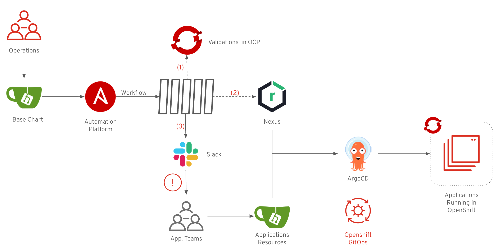

Welcome to Ansible Helm Lifecycle Lab Introduction The aim of this laboratory is to take you through the complete lifecycle of a Helm Chart named base-chart using Ansible Automation Platform. This Helm Chart will help operation teams on daily tasks like: Managing applications deployments. Control resources. Security and policies. Cluster housekeeping. Environments and cloud services management. The laboratory focus in the lifecycle of the base-chart:  Operations team make a change in base-chart repository (ex: new feature). Previous change triggers a workflow in Ansible Automation Platform. The workflow execute a set of job templates to: Setup testing environment in OpenShift. Deploy a testing application using the base-chart. Validate a scenario. Clean up environment in OpenShift. Package and upload the base-chart new version to Nexus. Send a notification with the new version if everything works as expected. Development teams will update the version of the chart in their application resources (repositories that ArgoCD is using to deploy applications). ArgoCD will automatically perform the deployment into OpenShift using the new chart. The lab is divided into two blocks of sections. The first one, from section 1 to 5 is a set of guided exercises that will allow you to familiarize yourself with the environment and create the foundation of the Helm Chart lifecycle . The last one is a section called Challenges, a set of exercises with no guide that will allow you to face more real scenarios in your own way. If you have any questions or concerns please let us know, we’re more than happy to help!! Lab Configuration